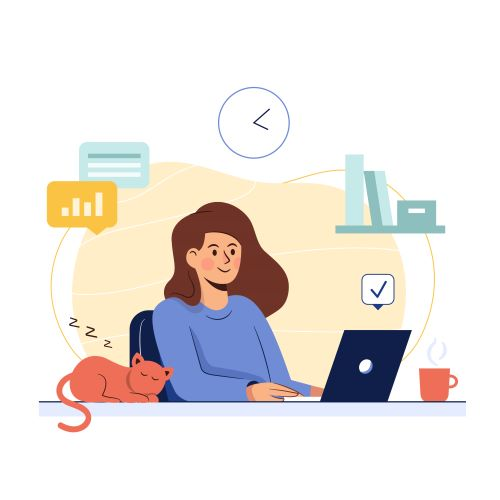
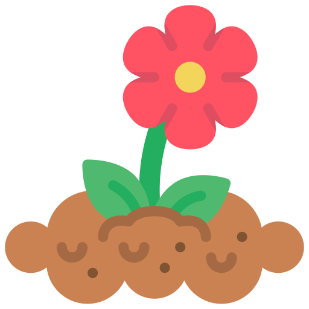

Automation architecture
Scalable UI, API, functional, regression, and end-to-end frameworks built for real delivery teams.
Available for automation leadership
QA Automation Engineer with 6.7+ years of experience turning complex products into reliable, scalable test systems. I lead with Playwright, AI-assisted engineering, and a quality mindset that starts early.
Automation strategy
AI-enabled quality
Technical leadership
QUALITY IMPACT Earlier feedback · stronger regression coverage · less manual effort · more confident releases
I design the systems, habits, and feedback loops that help teams ship better software with less uncertainty.
From framework architecture and CI/CD to AI-powered chatbot validation, I connect hands-on automation with the wider quality strategy. I collaborate with developers, business analysts, and product owners, mentor engineers, and help teams move from manual effort to maintainable automation.
Scalable UI, API, functional, regression, and end-to-end frameworks built for real delivery teams.
Practical validation for non-deterministic systems, from agent routing and prompts to conversational outcomes.
Performance frameworks and CI/CD workflows that make quality visible, repeatable, and faster to act on.
Define test strategy, identify quality gaps early, and connect coverage to product risk.
Mentor QA engineers and coach manual testers through knowledge sharing, reviews, and hands-on guidance.
Work with developers, analysts, product owners, and global stakeholders across the SDLC.
Improve maintainability, pipeline health, and delivery confidence through practical QA habits.
Four roles. One consistent focus: help teams release with confidence.
Uniper India / Energy Assets IT

Boston Consulting Group / Survey & Transformation Management
PwC India / Audit
Selected UI and API automation scenarios, designed and debugged test cases, managed defects and regression testing, and partnered with clients in a SAFe Agile environment.
Cognizant Technology Solutions / Travel & Hospitality
Created Selenium automation, test plans, completion reports, reusable utilities, and integration issue recommendations for brands including KFC and TSB.
Playwright · Cypress · Selenium WebDriver
Pytest · Rest Assured · Postman · k6
TypeScript · JavaScript · Python · Core Java · SQL · Maven
TestNG · Cucumber · POM · Azure DevOps · Git · Agile Scrum · SAFe
GitHub Copilot · OpenAI Agents · LLM Integration · AI-assisted Development
Good testing needs a wide lens, a little curiosity, and room to keep learning.
My journey includes a B.Tech in Information Technology from Netaji Subhash Engineering College, an ISTQB Certified Tester Foundation Level certification, guest lectures for college students, and hands-on projects that keep me close to building.
Seeing new places, meeting new perspectives, and bringing that openness back to the work.
TV series and movies: an ongoing study in characters, systems, and unexpected edge cases.
BTS fan, finding energy, creativity, and a little joy in the everyday.


Next release, better prepared.